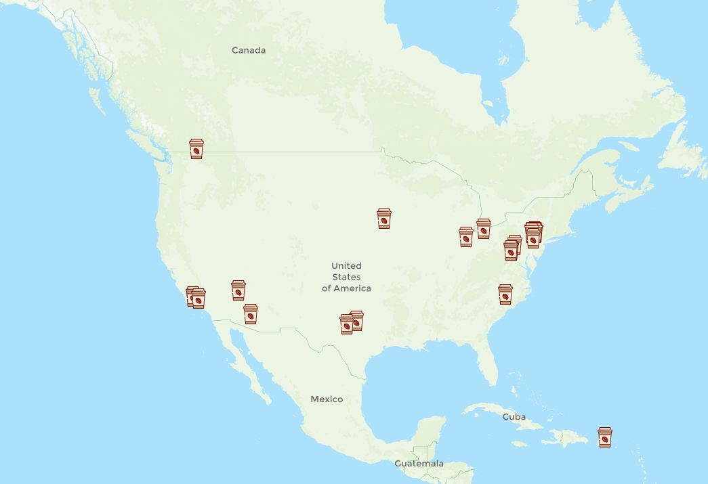
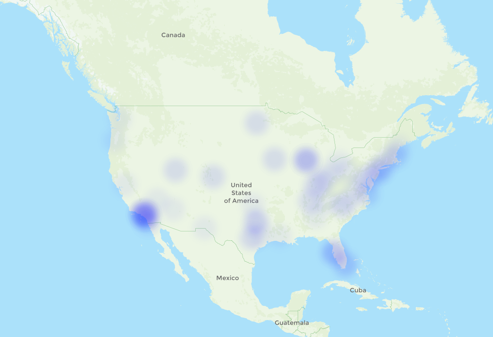
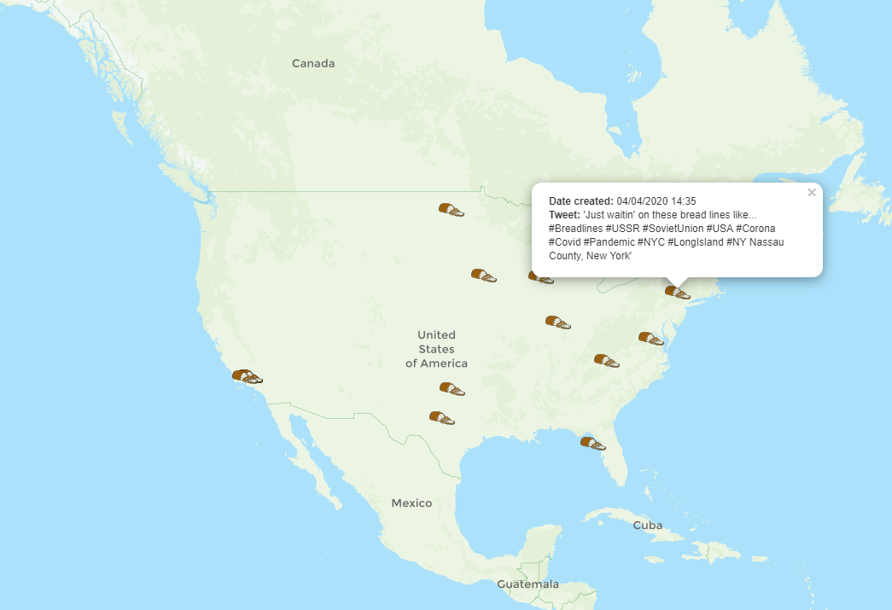

1 / 3

Stuck for ideas? Here are a few examples of maps produced on the Homepage of this site!
The maps displayed are all downloaded directly from the site, using the print function in the top left of the map!
Map showing the Tweets about Coffee!
2 / 3

Stuck for ideas? Here are a few examples of maps produced on the Homepage of this site!
The maps displayed are all downloaded directly from the site, using the print function in the top left of the map!
Heat Map made from Toilet Roll and Bread Tweets, with weightings of 23% Toilet Roll, and 77% Bread.
3 / 3

Stuck for ideas? Here are a few examples of maps produced on the Homepage of this site!
The maps displayed are all downloaded directly from the site, using the print function in the top left of the map!
Map showing the Tweets regarding Bread and Coronavirus with a popup displayed!